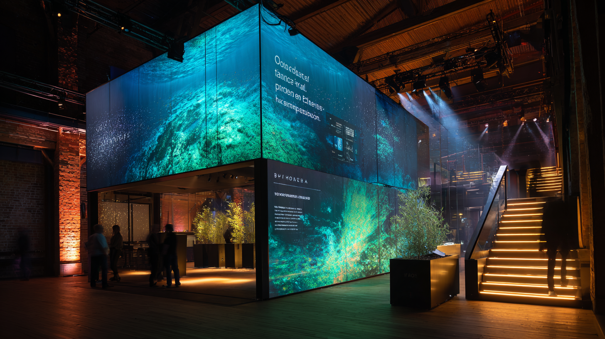

We build immersive showrooms & experience spaces
that make complex ideas easy to understand.
You’re explaining something big — energy transition, climate impact, an advanced platform.
We turn that into a physical experience people can feel.
Then we measure what worked, so you can prove value.
Energy & Infrastructure · Innovation & R&D · Climate & Sustainability · Public Education
Story you can walk into
Not slides. A physical story around your message.
We make the invisible system visible — grid balance, AI pipeline,
sustainability work — whatever you can’t explain in PowerPoint.

Live data, not stock visuals
We connect to your real metrics: grid data, ESG, biodiversity, research feeds.
People don’t argue with live reality. They align around it.
Proof built in
We quietly measure attention and engagement (privacy-first, EU-hosted).
You walk away with evidence of what resonated — perfect for board,
funders, regulators and press.
Procurement & Trust built in
Working with public bodies, utilities and research institutions means compliance matters.
We design for that from day one.
✔ EU hosting & data privacy
Analytics run on EU / CH infrastructure. GDPR-first.
No default US data flows. No invasive tracking.
✔ Safety & technical docs
We ship standard safety, install and maintenance documentation
ready for museum, expo and corporate environments.
✔ IP & licensing clarity
Clear ownership and licensing terms from day one.
No “who owns the content?” panic later.
✔ Procurement-ready model
Transparent scope, line-item pricing, service levels, reporting.
Compatible with public tendering and internal approval chains.
Delivered projects and prototypes.
Some client names are anonymised, but the situations are real.
Delivered
The Energy Flower (Fingrid)
Finland’s national grid operator wanted to make “energy flow”
visible to non-engineers. We turned live grid data into a kinetic
light sculpture so people could literally see the system breathing.
Impact: faster, calmer stakeholder dialogue.
Prototype
Climate & Oceans — Concept Study
Ocean and climate data is overwhelming.
We built an immersive layer-cake of light, depth and movement
so sponsors and partners could instantly see:
“here’s what’s changing, here’s why it matters.”
Use case: funding, partnerships, public engagement.
Anonymised
Nordic Utility — Visitor Flow Pilot
The client needed to redesign how visitors move through
an energy visitor centre. We mapped hotspots, dwell time
and confusion points along the journey.
Impact: clearer story path → better conversion.
In Development
Embodied Interaction — R&D
Executives can literally “touch” an invisible system — AI,
a data platform, an infrastructure layer — and see it respond.
That helps secure senior buy-in fast.
Use case: board / executive briefing for complex tech.
Concept Pilot
Sustainability Hub — Concept Pilot
ESG and sustainability teams struggle to make impact feel real.
We turn CO₂, biodiversity or efficiency metrics into an environment
you can stand inside — not just a PDF.
Use case: internal alignment, regulatory credibility,
employer brand.
Prototype
University Lab — Data Sculpture Prototype
Research partners often don’t “see” the value.
We built a physical data sculpture driven by live research feeds,
so industry partners could understand in 30 seconds what normally
takes 30 slides.
Use case: tech transfer and funding conversations.